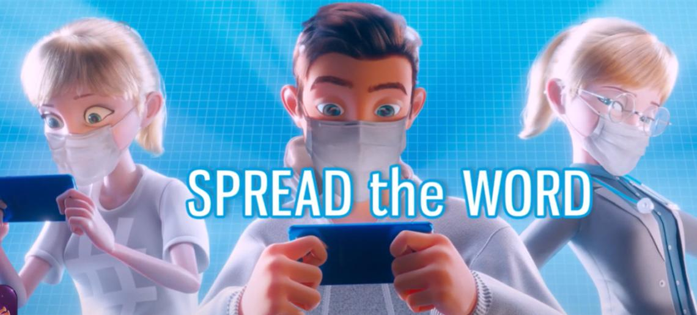

La Iniciativa es un equipo recién formado de Xbox Game Studios, un verdadero equipo de ensueño, porque su personal creativo ha participado en muchos de los juegos más exitosos de la generación anterior. Tomó meses saber qué estaba haciendo el estudio, hasta que alguien reveló que traerían de vuelta la oscuridad perfecta.

Para cualquiera, PlayStation está interesada en dar valor a su marca con su exclusividad y entorno online con elementos específicos, para distinguirla de los elementos que ya existen en el mercado, esto no es un secreto para nadie. La compra del famoso torneo de juegos de lucha EVO y la información de patentes relacionada con escenas competitivas en todos los niveles indican que Sony construirá una plataforma digital para él en algún momento.
Aunque la vacuna COVID-19 se usó en muchos países del mundo hace unos meses, muchas personas aún se muestran reacias a vacunarse. Para abordar esta situación, una empresa desarrolló un videojuego móvil en cooperación con una de las organizaciones médicas líderes en el mundo para crear conciencia sobre este importante tema.
Hace varias semanas, Battlefield 2042 tuvo una Beta que estuvo lejos de ser la más halagadora. En caso de que te haya dejado con dudas, pero tengas ganas de darle una segunda oportunidad, te alegrará saber que podrás hacerlo sin comprarlo. Lo que pasa es que Battlefield 2042 tendrá una prueba para usuarios de Xbox Game Pass y EA Play. Electronic Arts anunció que Battlefield 2042 tendrá una prueba de 10 horas que estará disponible a partir del 12 de noviembre.